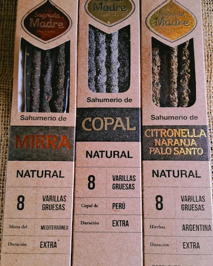
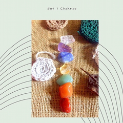

Bienvenidos a NANA-LUMINARIA una Tienda Holistica ,Terapeuta Floral, Aromaterapia, Astrologia Evolutiva, Reiki y Cristales para el Alma
Armoniza tu Cuerpo , Mente y Amla
Todos tenemos un sentido innato del equilibrio, lo buscamos de manera natural, también en los espacios, porque nos da estabilidad, reposo y paz. Para ello, es necesario permitirnos parar. Este ultimo eje recoge todos los anteriores. Cuando las cosas se hacen con un sentido, el resultado es la coherencia, y lo que es coherente es estable en el tiempo. Armonizar un espacio es poner conciencia en el mismo, es regenerarlo, restableciendo el vinculo vivo entre la persona y el espacio que habita. Cuando armonizamos un espacio, la energía vital aumenta de forma perceptible, lo cual repercute beneficiosamente en todos los aspectos de la vida de una persona.
CICLOS LUNARES
Las fases lunares como hemos dicho son muy importantes para la agricultura (chacra), y la cría de animales domésticos, ya que muchas veces el éxito de las siembras, cosechas y fertilidad de animales, depende de ellas, así como el tratamiento y sanación de algunas enfermedades que nos afectan como seres humanos.
Nuestros productos
Sauhumerios
 MAS INFO
Cristales
 MAS INFO